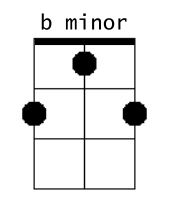

Introduction to Chords
Now that you have tuned your panduri and learned how to strum, let's get to learning some chords. If you prefer, you can skip this section and go directly to the chord charts.
I'm only briefly going to go into fingerings, as you will have to adjust them based on how you want to play certain chords, but in general, you want the lowest-sounding string to be played with your thumb.
Here we have one of the most common chords on the panduri. Assuming AC#E tuning, this chord would be called b minor. It's a very important chord shape, so be sure to learn it well!

Here, as usual, you want to play the lowest-sounding string with your thumb, then the middle string with your index finger, and the highest string with your middle finger.
This next very common chord is called e minor:

Here, it's easiest to keep your hand at the same position it was for b minor. Keep your thumb on the lowest-sounding string, and simply hold down the two remaining strings at the third fret with your ring finger to create e minor.
Finally, let's learn one more chord, A Major, and then we'll be able to play many Georgian songs.

This is just an open chord; you don't need to press down on anything!
So, with these three chords (b minor, e minor, and A Major) you can play a song that will already be familiar to most of you, "Magnolia,” which I have for you on the next page.